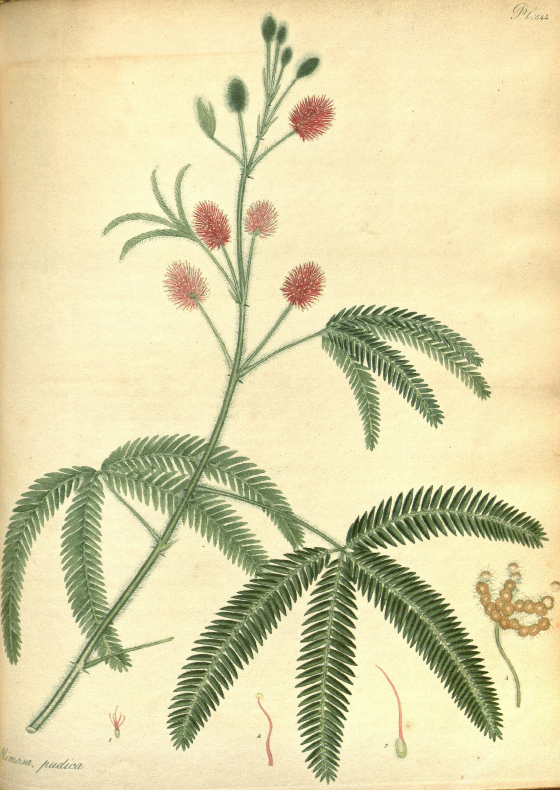

Brush a leaf of Mimosa pudica and it answers before you have taken your hand away. The two leaflets you touched fold up against each other, face to face, and the pair beside them follows, and the next, a closing that runs down the little branch toward the stalk at a pace you can watch, a few centimetres a second. When it reaches the stalk the other branches draw together and close from their bases, and then the whole leaf drops on its hinge, as if it had been cut. A few seconds have passed. It takes the plant ten or twenty minutes to put the leaf back.
The hinge is a pulvinus, a swelling at the foot of every stalk, every branch and every leaflet, packed with motor cells that hold the leaf up by the pressure of the water in them. In 1873 Wilhelm Pfeffer showed that the movement lives there and nowhere else: the cells on one side of the joint suddenly let their water go, and the joint buckles. His attempt to explain how a cell could hold and lose that pressure sent him to the semipermeable membranes of his Osmotische Untersuchungen, the experiments on which van ’t Hoff later built the law of osmotic pressure.

Charles Darwin and his son Francis spent much of the 1870s watching leaves move. In The Power of Movement in Plants (1880) they fixed fine glass filaments to the tips of leaves and traced, dot by dot on sheets of glass, the slow circles every growing part of a plant describes, and the evening movement they called sleep. Mimosa sleeps in earnest: at dusk its leaflets fold and its leaves sink exactly as they do when touched, though slowly, and nobody has touched them. A hundred and fifty years earlier the astronomer de Mairan had shut a sensitive plant in a cupboard and found that it went on opening by day and closing by night in the dark, the first sign of a clock inside a living thing.
Touch is expensive. A folded leaf is not feeding, and in 2014 Monica Gagliano and her colleagues asked whether the plant could learn when not to bother. They dropped potted plants fifteen centimetres in a padded rig, again and again. Within a few drops many stopped closing; shaken instead of dropped, they closed at once, so they were not simply tired. A month later, without further training, they still ignored the drop. Plants grown in poor light, for whom a closed leaf costs most, learned fastest. Close this leaf too often and it will do the same: it still closes, but slowly, the way it does at dusk, without falling.